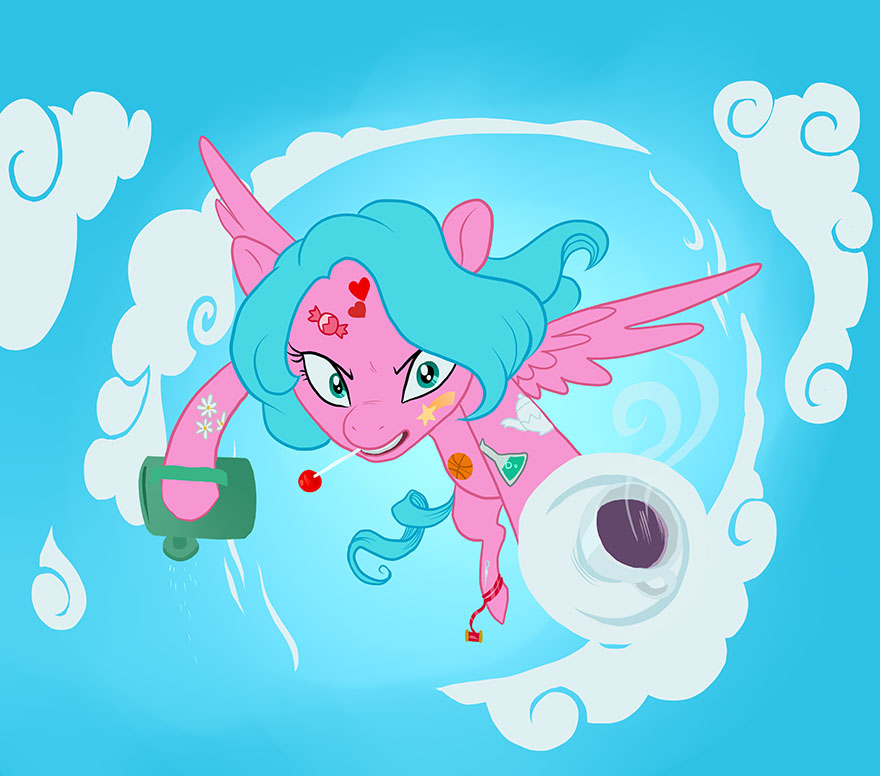

Skills & Edges
Skill List
In this section, you will find the 99 Skills used in S3E, organized alphabetically in their 25 Skill categories. Each Skill category contains a brief description of the basis for the Skills it contains, what the base Attribute for the Skills in the category are, and then individual brief descriptions for each Skill it contains. What follows is a quick reference chart of S3E’s Skills, separated by base Attribute and Skill category.
Mind Skills | Body Skills | Heart Skills |
Ascetic Category Discipline Meditation Memorization Detective Category Cryptography Investigation Observation Doctor Category Diagnosis Surgery Treatment Engineer Category Blacksmithing Construction Electronics Machinery Software Magician Category Spellcasting Navigator Category Cartography Direction Sense Professional Category Administration Economics Marketing Scholar Category History Law Literature Magic & Occult Philosophy Politics Scientist Category Archaics Biology Chemistry Ecology Geology Mathematics Physics | Acrobat Category Balance Flexibility Tumbling Athlete Category Climbing Flying Leaping Running Swimming Weightlifting Cowpony Category Camping Foraging Gardening Rope Tricks Tracking Fighter Category Finesse Weapons Heavy Weapons Lashes & Chains Martial Arts Shields & Armor Marksman Category Archery Artillery Shooting Throwing Pilot Category Aerospace Nautical Terrestrial Scoundrel Category Forgery Lockpicking Pickpocketing Sleight Of Hoof Stalker Category Concealment Incognito Silent Movement | Actor Category Deception Disguise Artist Category Aesthetics Body Art Fashion Gourmet Illustration Photography Sculpting Theatre Writing Beastmaster Category Behavior Command Riding Training Counselor Category Analysis Therapy Leader Category Banter Intimidation Rapport Swagger Performer Category Comedy Dancing Juggling Musician Oratory Singing Socialite Category Celebrity Etiquette Persuasion Translator Category Comprehension Linguistics Non-Verbal |
Acrobat Skills
Skills in the Acrobat category follow the theme of gymnastic prowess and agility, and use the base Attribute Body.
Balance: Being able to maintain, or regain, your balance in situations where this is difficult to do.
For example, walking a tightrope, standing on top of a flagpole, or ice skating without falling over.
Flexibility: Twisting, bending, stretching, tucking, and other acts of preternatural contortion.
For example, fitting inside a hollow log, or stretching to let a foal skateboard between your hooves.
Tumbling: Executing flips, rolls, cartwheels, barrel rolls, and other acts of gymnastics.
For example, twisting in mid-air to land on your hooves, rolling in a somersault, or bouncing from a wall.
Actor Skills
Skills in the Actor category follow the theme of stagecraft and being a thespian, and use the base Attribute Heart.
Deception: The art of making someone believe you when you aren't being entirely honest.
For example, being believable when you say that you haven't seen someone, when you actually have.
Disguise: The art of concealing your identity for anonymity's sake, or impersonating someone.
For example, changing your voice and accent, wearing a fake beard, or dying your mane to hide yourself.
Artist Skills
Skills in the Artist category follow the theme of practicing various artistic talents, and use the base Attribute Heart.
Aesthetics: Interior decorating, landscaping, and other pursuits involving designing or interpreting (but not necessarily executing) artistic endeavors.
For example, designing a Hearts & Hooves Day card, or choosing the right curtains to go with a carpet.
Body Art: Mane, tail, and coat dyes, body piercings, tattoos, mane-cuts, and other body beauty.
For example, dying someone's mane a complex pattern of bright neon colors and cutting it in a cool style.
Fashion: Designing both formal and casual clothing, as well as accessories and full ensembles.
For example, sewing a beautiful sundress and picking the best big floppy hat to go along with it.
Gourmet: Creating and following recipes for cooking delicious, nutritious, and eye-catching food.
For example, baking a colorful and award-winning Marzipan Mascarpone Meringue Madness cake.
Illustration: Drawing and sketching with various tools, as well as painting in a variety of mediums.
For example, using watercolor paint to make a portrait, or drawing a horse-drawn carriage with a pencil.
Photography: Taking photos and pictures, whether on static photographic film or motion picture film.
For example, shooting a sequence of glamorous production photos of Equestria's next star fashion model.
Sculpting: Creating physical artwork such as statues, whether realistic or more abstract in style.
For example, carving a full-body or bust statue of a heroic pony, or erecting a more symbolic sculpture.
Theater: Designing an entertaining presentation, including pageantry, spectacle, and procession.
For example, putting together a parade, throwing a party, or directing a Hearth's Warming Eve pageant.
Writing: Using words, phrasing, poetry, and prose, to create works of literature and language.
For example, writing a song or a poem, fashioning a novel, or putting together a letter to a princess.
Ascetic Skills
Skills in the Ascetic category follow the theme of mental discipline and self-control, and use the base Attribute Mind.
Discipline: Maintaining conscious command over your emotions, despite your external situation.
For example, keeping a handle on your fear even when faced with a pack of Timber Wolves.
Meditation: Achieving a trance, allowing you to control your body to a greater degree than normal.
For example, focusing on slowing your heart rate and breathing so as to appear unconscious.
Memorization: Committing things to memory, and remembering things you've observed or experienced.
For example, trying to remember the words to a magical rhyme you heard once as a young foal.
Athlete Skills
Skills in the Athlete category follow the theme of strength and physical conditioning, and use the base Attribute Body.
Climbing: Ascending, descending, or clinging to a surface or object which can support weight.
For example, climbing up a rope, scaling a wall, climbing down a cliff face, or clinging to a dragon.
Flying: Using wings—or occasionally, magic—to hover, maneuver, and move through the air.
For example, flying through cloud hoops, hovering upside-down, or creating a Sonic Rainboom.
Leaping: Jumping, whether for height or for distance, as well as bouncing and skipping along.
For example, trying to bounce up and touch the ceiling, or long-jumping in an iron pony contest.
Running: Galloping along the ground, both for speed as well as maneuvering.
For example, running a slalom of barrels at a rodeo, or sprinting ahead to take the lead in a race.
Swimming: Treading water, diving, and paddling along in both turbulent and calm bodies of water.
For example, staying afloat in a raging river's rapids, or diving all the way to the bottom of a deep pond.
Weightlifting: Using muscular power to push, pull, drag, lift, throw, and catch heavy objects.
For example, pulling an ox-cart, pushing a snow-plow, lifting a boulder, or throwing aside a tree trunk.
Beastmaster Skills
Skills in the Beastmaster category follow the theme of interacting with animals, and use the base Attribute Heart.
Behavior: Being able to tell what an animal is thinking, feeling, or experiencing via interaction.
For example, knowing that a bear is carrying stress in its shoulders, or understanding a duck's quacking.
Command: Getting animals to follow your directions and do what you instruct them to do.
For example, staring down a group of unruly chickens in order to get them to go back into their pen.
Riding: Using various animals as a means of conveyance and transportation with their consent.
For example, being carried along by a swarm of butterflies, or riding a tortoise through Ghastly Gorge.
Training: Teaching an animal to behave in a certain way or to perform certain tricks on command.
For example, teaching a dog to bark when chickens have gotten loose, or to help herd stampeding cattle.
Counselor Skills
Skills in the Counselor category follow the theme of understanding others mentally and emotionally, and use the base Attribute Heart.
Analysis: Being able to tell someone's mental and emotional state, whether apparent or subtle.
For example, knowing at a glance that a friend is depressed or that they aren't acting like themselves.
Therapy: Being able to alleviate someone's mental and emotional state to a limited degree.
For example, making someone who's scared calm down or cheering up someone who is depressed.
Cowpony Skills
Skills in the Cowpony category follow the theme of living on the frontier of the wilderness, and use the base Attribute Body.
Camping: Clearing and assembling a suitable campsite, gathering materials, and making camp.
For example, erecting a sturdy tent, building a fire and extinguishing it, building a makeshift shelter, etc.
Foraging: Searching the wilderness for any number of various useable materials and resources.
For example, finding good firewood, picking berries, digging up roots, and harvesting wild honey.
Gardening: Planting crops, tending to their needs for growth, and harvesting them at the right time.
For example, planting a row of corn, fertilizing and watering a patch of herbs, and harvesting wheat.
Rope Tricks: Tying loops and knots, twirling a lasso and throwing it accurately, and other rope use.
For example, hog-tying a sheep, lassoing a runaway bull, and dancing through a spinning rope for fun.
Tracking: Reading hoof-prints and other signs of passage, and following hard-to-spot game trails.
For example, noticing bent grass as a sign of passage, and being able to follow game through the woods.
Detective Skills
Skills in the Detective category follow the theme of investigation and deductive logic, and use the base Attribute Mind.
Cryptography: Cracking codes, puzzling out ciphers, and picking patterns out of complex systems.
For example, noticing that a bunch of fallen candy has scattered in a vaguely star-shaped pattern.
Investigation: Actively searching an individual or your surroundings to find hidden or obscured things.
For example, searching a house to find a missing locket, or an individual to find doughnut crumbs.
Observation: Passively using your five senses to discern basic information about your environment.
For example, watching someone to notice they have a limp, or smelling freshly-baked pie nearby.
Doctor Skills
Skills in the Doctor category follow the theme of practicing medicine and healing, and use the base Attribute Mind.
Diagnosis: Using observation, experimentation, and gut instinct to determine someone's condition.
For example, being able to tell whether someone has the Feather Flu, or just a case of Lazy-itis.
Surgery: Operating on someone to fix internal or external injuries requiring direct intervention.
For example, repairing a fractured wing, pulling a broken tooth, or stitching a wound closed.
Treatment: Using non-invasive methods to repair injuries which do not require direct intervention.
For example, identifying and administering the right medicine to cure a bad case of Hay Fever.
Engineer Skills
Skills in the Engineer category follow the theme of building, modifying, breaking, and repairing, and use the base Attribute Mind.
Blacksmithing: Using a forge, hammer, and anvil to work metal or other basic materials into basic objects and devices.
For example, beating golden steel into a spear and a suit of armor for the Canterlot Royal Guard.
Construction: Designing and assembling buildings and other architecture out of various materials.
For example, building a tower into a castle wall, a hut in the woods, or a bridge over the river.
Electronics: Assembling and modifying electronic devices of varying levels of sophistication.
For example, building a device that reads brainwaves or a printer which shows the results.
Machinery: Assembling and modifying physical machinery of varying levels of sophistication.
For example, building a treadmill device which presses apples for cider or a wagon to haul it.
Software: Using programming to create or modify software to direct the function of computers.
For example, programming a robot to carry out specific commands or modifying it to stop doing so.
Fighter Skills
Skills in the Fighter category follow the theme of engaging in hoof-to-hoof combat, and use the base Attribute Body.
Finesse Weapons: Wielding a variety of weapons which rely on your precision and speed to perform well.
For example, parrying and thrusting with a rapier or sticking somepony with a dagger or needle.
Heavy Weapons: Wielding a variety of weapons which rely on your strength and power to perform well.
For example, bashing down a door with a heavy mallet or chopping down a tree with a logger's axe.
Lashes & Chains: Wielding a variety of weapons which rely on a skilled use of momentum to perform well.
For example, cracking a whip to make a team of oxen move or swinging a flail at somepony.
Martial Arts: Fighting with your hooves, talons, wings, head, and any other natural bodily weapons.
For example, head-butting, slashing with a talon, bucking an apple tree, or wrestling with somepony.
Shields & Armor: Wielding a variety of protective gear such as shields, helmets, armor, and padding.
For example, blocking a spear thrust with a shield or trusting armor to deflect a bolt of magical fire.
Leader Skills
Skills in the Leader category follow the theme of being the focal point of a situation, and use the base Attribute Heart.
Banter: Using wit, charm, and personal magnetism to turn social situations in your favor.
For example, giving a witty rebuttal to an insult which makes the one who said it look foolish instead.
Intimidation: Inspiring fear and unease in others in order to coerce them into doing what you want them to do.
For example, taunting someone into leaving or making them give you something out of fearful compliance.
Rapport: Establishing camaraderie with others to inspire trust, friendship, and respect.
For example, convincing someone that they can count on you to get a certain job done—and done right.
Swagger: Projecting a confident and self-assured attitude in order to evoke a response from others.
For example, bragging about one's deeds in order to inspire awe and hero-worship from those around you.
Magician Skills
Skills in the Magician category follow the theme of arcane study and spellcasting, and use the base Attribute Mind.
Spellcasting: Using arcane power and mystical study to cast spells and manipulate magical forces.
For example, opening a door magically or casting a spell to turn an apple into an orange.
Marksman Skills
Skills in the Marksman category follow the theme of hitting a target at range, and use the base Attribute Body.
Archery: Striking a target with a variety of weapons which use muscle power for propulsion.
For example, knocking, drawing, and firing longbows or shortbows, as well as slings and slingshots.
Artillery: Striking a target with a variety of weapons which only require aiming for guidance.
For example, firing a party cannon's contents onto a table accurately or firing a catapult or trebuchet.
Shooting: Striking a target with a variety of weapons which use non-muscle power for propulsion.
For example, aiming and firing a crossbow, squirt gun, fire hose, flame-thrower, or firearm.
Throwing: Striking a target with something you've thrown, tossed, or otherwise hurled yourself.
For example, flinging a knife, throwing darts, hurling a grappling hook, or pitching a baseball.
Navigator Skills
Skills in the Navigator category follow the theme of orientation and pathfinding, and use the base Attribute Mind.
Cartography: Using maps, globes, and other resources to determine location, path, and destination.
For example, using a map of a mountain to plot the best route to the dragon's cave at the summit.
Direction Sense: Using landmarks, the stars, and other methods to discern your relative location.
For example, figuring out that you are a few miles northeast of the destination you are trying to reach.
Performer Skills
Skills in the Performer category follow the theme of entertaining others with your actions, and use the base Attribute Heart.
Comedy: Telling jokes or amusing anecdotes, making puns, slapstick comedy, and other humor.
For example, telling 'knock-knock' jokes, or when all else fails, dumping a bag of flour over your head.
Dancing: Making graceful and rhythmic motion, whether a formal routine or an improvised one.
For example, dancing a perfect waltz or tango, break-dancing to a beat, or just 'getting down' at a party.
Juggling: Throwing, catching, balancing, and otherwise deftly manipulating objects in mid-air.
For example, juggling flugelhorns, tossing bowling pins back and forth, or balancing spinning plates.
Musician: Playing any number of musical instruments, as well as being a competent disc jockey.
For example, running a DJ booth for a wedding reception or playing the cello / double bass / fiddle.
Oratory: Telling stories, reciting lines in a play, or giving an inspirational and moving speech.
For example, telling the story of the headless horse or acting in the Hearth's Warming Eve pageant.
Singing: Making music vocally and melodically, including lyrical singing and even whistling.
For example, singing a country song, whistling Flight of the Valkyries, or belting out '99 Buckets of Oats.'
Pilot Skills
Skills in the Pilot category follow the theme of driving and maneuvering vehicles, and use the base Attribute Body.
Aerospace: Correctly handling all manner of airborne craft, as well as various kinds of spacecraft.
For example, flying a hot-air balloon, airplane, or gyrocopter, as well as maneuvering a rocket ship.
Nautical: Correctly handling seafaring and aquatic vehicles, which includes submersible vessels.
For example, navigating a raft, jet-ski, canoe, or yacht, as well as piloting a deep-sea submarine.
Terrestrial: Correctly handling ground vehicles, from trains and wagons to scooters and skates.
For example, ice-skating, conducting a locomotive, crossing town on a scooter, or guiding a wagon.
Professional Skills
Skills in the Professional category follow the theme of business management, and use the base Attribute Mind.
Administration: Managing employees and directing the organization and activities of a company.
For example, setting up an efficient management structure or running a company day-to-day.
Economics: Understanding the value, profitability, and economic impact of a product or strategy.
For example, being able to tell if cherries are worth two bits or how to capture the wholesale market.
Marketing: Coming up with, and implementing, effective advertising and marketing campaigns.
For example, coming up with a new jingle or a flashy new logo to get people interested in your goods.
Scholar Skills
Skills in the Scholar category follow the theme of academic research and knowledge, and use the base Attribute Mind.
History: Knowing historical figures, important past events, and notable places and civilizations.
For example, recalling that King Sombra once ruled over the Crystal Empire with an iron hoof.
Law: Knowing the procedures and inner workings of jurisprudence and the law of the land.
For example, knowing that jaywalking is illegal in Canterlot or when you can object in court.
Literature: Knowing stories, both fiction and non-fiction books, local legends, proverbs, and fables.
For example, remembering which book would contain information on the Alicorn Amulet.
Magic & Occult: Knowing about spells and the practice of magic, mythology, mysticism, rituals, and curses.
For example, being able to explain the workings of an amniomorphic spell to someone.
Philosophy: Knowing belief systems, religion and spirituality, and how to explore an outlook on life.
For example, knowledgeably debating the differences between objective and subjective morality.
Politics: Knowing the workings of the political and governing process and the ruling hierarchy.
For example, knowing that a mayor reports to a governor or that Celestia and Luna rule Equestria.
Scientist Skills
Skills in the Scientist category follow the theme of knowledge and proficiency in science, and use the base Attribute Mind.
Archaics: The study of ancient things, whether they are people, places, or objects of interest.
For example, discovering that an artifact is over a thousand years old and from the Crystal Empire.
Biology: Flora, fauna, and the study of the anatomical processes which create and sustain life.
For example, discerning that a strange and wondrous creature evolved from an extinct animal.
Chemistry: The formation and interaction of chemicals, gasses, and other foundational elements.
For example, being able to properly formulate alchemical items and identify volatile ingredients.
Ecology: The systems and cycles of nature, including geography and climate / weather patterns.
For example, knowing that a certain cloud pattern will mean rain or that the zap apples are coming.
Geology: The study of earthly minerals, from sand and stone to metallurgy and precious jewels.
For example, telling the difference between tungsten and platinum or a normal ruby and a fire ruby.
Mathematics: Probability, statistics, calculus, algebra, geometry, trigonometry, and other higher math.
For example, being able to calculate the odds of something occurring or solving a complex equation.
Physics: The study of motion, energy, gravity, magnetism, and how fundamental forces interact.
For example, figuring out a rocket ship's best trajectory or the attractive strength of a magnetic field.
Scoundrel Skills
Skills in the Scoundrel category follow the theme of thievery and spycraft, and use the base Attribute Body.
Forgery: Creating counterfeit copies of things, from fake bits to a duplication of a signature.
For example, making a fake passport to let you cross a border or faking a parent's signature at school.
Lockpicking: Opening locks and other security devices without having the correct key to do so.
For example, using a hair pin to unlock a door or unlatching a locked chest using a bent fork's tines.
Pickpocketing: Snatching an item or object off of someone else without them noticing that it's gone.
For example, plucking a few bits from someone's pocket in passing or taking a locket while they sleep.
Sleight Of Hoof: Hiding something on your person or doing something tricky without being noticed.
For example, using your tail to steal an apple from an apple cart or hiding a key in the curls of your mane.
Socialite Skills
Skills in the Socialite category follow the theme of fitting into a social setting, and use the base Attribute Heart.
Celebrity: The innate talent of being regarded highly upon first impression in a social setting.
For example, being viewed with respect when you are introduced to someone for the very first time.
Etiquette: Being able to discern and intuit the rules and hierarchy of any given social setting.
For example, knowing to eat the salad first at a dinner party or to wait until the host sits before you do.
Persuasion: The ability to sway a social setting according to the direction you wish to take it in.
For example, when viewing a few pieces of artwork, getting others to agree with you on which is better.
Stalker Skills
Skills in the Stalker category follow the theme of stealth and avoiding detection, and use the base Attribute Body.
Concealment: The art of using your physical surroundings to camouflage yourself and go unnoticed.
For example, hiding inside a fallen log or moving unseen behind a thicket of bushes and brambles.
Incognito: The art of vanishing into a crowd or otherwise making yourself seem inconspicuous.
For example, blending in with a crowd of tourists disembarking a train, so as to seem like one yourself.
Silent Movement: The art of moving and performing actions while making as little sound as possible.
For example, quietly sneaking downstairs at night or creeping up on someone to surprise them.
Translator Skills
Skills in the Translator category follow the theme of communicating with others, and use the base Attribute Heart.
Comprehension: Understanding foreign languages and alphabets, both written as well as spoken.
For example, deciphering a strange inscription on a cave wall or understanding a new spoken language.
Linguistics: Speaking and writing new and foreign languages so as to be correctly understood.
For example, being able to speak in the Zebra language even after just recently hearing it for the first time.
Non-Verbal: Using body language, non-language sounds, and gestures to be understood by others.
For example, nodding toward a door to indicate that someone is waiting inside the adjacent room.
Edge List
In this section, you will find the 52 Edges in S3E, organized alphabetically and by type. What follows is a quick reference chart of S3E’s Edges.
Edge Type | Edge Name |
Virtue Edges | Courageous Determined Enlightened Inspirational Lucky |
Story Edges | Big Crown Thingy Diamond In The Rough Fan Club Fantastic Family Far And Wide Fortune's Favor Home Sweet Home Jester, Sailor, Soldier, Spy Mare Of Mystery Masterful Mentor Number One Assistant Perfect Pet Studious Student |
Power Edges | Bits And Bobs Dire Straits Musical Number Share And Care Signature Move Words Of Wizardry |
Advantage Edges | Doubly Mirrored Good Natured Lead Pony Noble Soul Spirited True, True Friend Wing Pony |
Luck Edges | Daring Doings Last Chance Maverick Stacked Deck |
Skill Edges | General Training Pony Prodigy Skill Swap: Ballistics Training Skill Swap: Method Actor Skill Swap: Natural Equilibrium Skill Swap: Need For Speed Skill Swap: Stage Presence Skill Swap: Wild Talent |
Racial Edges | Alchemical Genius Blaster Caster Pride Of The Skies Quick Learner Total Recall Weather Witch |
Special Edges | Code Of Honor Fatal Flaw Magic Trick |
Virtue Edges
Courageous
Activate on your turn. You may spend a point of Virtue and roll 1d6. For the duration of this scene, any ‘damage d6’ rolled by the GM to deal damage to you, which does not result in a number equal to or higher than your initial roll, does not deal damage to you. You may not spend more than one point of Virtue per Scene for this effect. (For example, you spend a point of Virtue and activate this Edge, rolling 1d6. If you rolled a 4, any ‘damage d6’ rolled against you in this scene resulting in a 3 or below is discarded; in other words, you can only be harmed by 4’s, 5’s, and 6’s.)
Determined
Activate on your turn. You may spend a point of Virtue to recover from being Sidelined, and immediately regain 5d6 Fortitude and Willpower. This Edge can only affect you; it may not be used to allow other characters to recover from being Sidelined. You may not spend more than one point of Virtue per Scene for this effect.
Enlightened
Activate on your turn. You may spend a point of Virtue to reduce the level of any spells you cast for the duration of this Scene by half (rounded up), thus decreasing the amount of Fortitude and / or Willpower you must pay to cast them. You may not spend more than one point of Virtue per Scene for this effect. This effect takes place before any other reduction to the cost of casting your spells. (For example, when casting a spell of level 31, you reduce its level by half, rounded up—in this case, to 16.)
Inspirational
Activate on your turn. You may spend a point of Virtue to cause any and all friends who have been Sidelined to recover from being Sidelined, and all friends (Sidelined or not) immediately regain 3d6 Fortitude and Willpower each (roll once and apply the result to everyone). You may not use this Edge if you are Sidelined, and you may not spend more than one point of Virtue per Scene for this effect.
Lucky
Activate on your turn. You may spend a point of Virtue to re-roll the lowest single d6 on any failed Skill Checks you make this Scene, and take the new result instead. You may not spend more than one point of Virtue per Scene for this effect.
Story Edges
Big Crown Thingy
You possess some mystical artifact, magic item, or other object with unique qualities. Work with your GM to determine the details, and the limitations, if any, of this artifact. This Edge requires GM approval.
Diamond in the Rough
You are notably attractive, especially pretty or handsome. Work with your GM to determine the details. At the GM’s discretion, this Edge may impact the story in a positive or negative way. This Edge requires GM approval.
Fan Club
You have a group of admirers, or perhaps one or two die-hard fans. Work with your GM to determine the details. At the GM’s discretion, this Edge may impact the story in a positive or negative way. This Edge requires GM approval.
Fantastic Family
You have an immediate family member who will generally help you when you call on them, if they are able to. Work with your GM to determine the details. This Edge requires GM approval.
Far and Wide
You are fairly well known as a celebrity for something or other. Work with your GM to determine the details. At the GM’s discretion, this Edge may impact the story in a positive or negative way. This Edge requires GM approval.
Fortune's Favor
You are more wealthy than normal characters, within reason. Work with your GM to determine the details. At the GM’s discretion, this Edge may impact the story in a positive or negative way. This Edge requires GM approval.
Home Sweet Home
You have a dwelling which you own, and which is suited to your purposes. Work with your GM to determine the details. At the GM’s discretion, this Edge may impact the story in a positive or negative way. This Edge requires GM approval.
Jester, Sailor, Soldier, Spy
You hold some office, rank, or station above normal characters. Work with your GM to determine the details. At the GM’s discretion, this Edge may impact the story in a positive or negative way. This Edge requires GM approval.
Mare of Mystery
You have a secondary persona, an alter-ego, which you can make use of freely. This affords you anonymity when you need it, but must be kept secret! Work with your GM to determine the exact nature of this alter-ego. This Edge requires GM approval.
Masterful Mentor
You have a teacher, mentor, or patron who has your best interests at heart. While they may not always be able to provide direct assistance, they can help you with guidance and advice at the GM’s discretion. This Edge requires GM approval.
Number One Assistant
You have an assistant in your service (the exact nature of which should be worked out with the GM); they can carry out reasonably complex commands and are able to assist you with reasonably complex tasks at the GM’s discretion. Your assistant has a mind of its own, however, and may disobey you or cause trouble on its own. This Edge requires GM approval.
Perfect Pet
You have some small, lesser animal as a loyal pet (the exact nature of which should be worked out with the GM); they can carry out simple commands and are able to assist you with basic tasks at the GM’s discretion. In general, your pet will obey whatever you tell it to do, and will avoid causing trouble on its own. This Edge requires GM approval.
Studious Student
You have a student, apprentice, or some other kind of character who looks up to you as a mentor and may come to you for guidance or advice. Work with your GM to determine the details. How this Edge may impact the story is up to the GM’s discretion, as you do not control your student—they are a separate entity under GM control. This Edge requires GM approval.
Power Edges
Bits and Bobs
Once per Episode, you may declare that your character brought “just the thing” for the situation at hand. Work with your GM to determine what object or Tool your character then pulls from seemingly nowhere.
Dire Straits
Once per Episode, when you are dealt damage which would Sideline you, you may use this Edge. If you do, you are prevented from being Sidelined by the damage; instead, you are reduced to one point of Fortitude and / or Willpower, whichever type would have otherwise been reduced to zero.
Musical Number
Once per Episode, your character may break into an inspiring musical number; this allows your entire group to recover all of their lost Fortitude and Willpower as if they had been able to make a focused recovery. This ability may not be used in Cinematic mode, or when facing danger or a direct threat. (Actual singing by players is optional, but encouraged!)
Share and Care
Once per Episode, you may 'sacrifice' any amount of Fortitude and/or Willpower, and give that much of each to a non-Sidelined friend to heal them. Fortitude replaces Fortitude, and Willpower replaces Willpower; the types must match. You may even Sideline yourself if you sacrifice too much!
Signature Move
Work with your GM to develop a special power that only your character has, as well as its effects. This Edge correlates to the in-show abilities of Fluttershy’s Stare, Pinkie Pie’s Pinkie Sense, and Rainbow Dash’s ability to produce Sonic Rainbooms, among others. Once per Episode, by spending a point of Virtue, you may use it.
Words of Wizardry
Choose a single spell your character can already cast, and assign this Edge to it. Once per Episode, your character may recite a mystical rhyme as part of casting the chosen spell. These magic words contain the power necessary to sustain the spell, reducing its Level (and thus, its cost to cast) to zero. (Actual recitation of a rhyme by players is optional, but encouraged!)
Advantage Edges
Doubly Mirrored
Immediately gain and spend two Advancements.
Good Natured
When you spend a point of Virtue for any reason, roll 1d6. If the result is a 5 or a 6, you gain the benefit of the point as normal, but the Virtue is not actually spent.
Lead Pony
If at least one friend is assisting you in a Skill Check, you gain an additional +1 bonus to the Skill Check. This is only applied once, even if multiple friends assist, and the maximum of 5 assistants still applies (though this way the total bonuses may exceed +5).
Noble Soul
You begin each Episode with 1 extra point of Virtue.
Spirited
When you spend a point of Virtue to restore Fortitude and Willpower, you gain the effects of having spent two points of Virtue instead. You may spend each in any way you choose, between yourself or friends.
True, True Friend
Once per Scene, when a friend would take damage, you may elect to "take the hit" in their place. You are dealt half of the damage your friend would have taken, rounded down; your friend takes no damage.
Wing Pony
Whenever you assist a friend with a Skill Check, you grant them an additional +1 bonus. The limit of 5 maximum assistants still applies (though this way the total bonuses may exceed +5).
Luck Edges
Daring Doings
Once per Episode, before rolling a Skill Check, you may force it to be treated as a Critical result regardless of the subsequent dice roll. This may turn the result into a Critical success or a Critical failure depending on what the outcome of the Skill Check is as normal.
Last Chance
When things are at their absolute worst, sometimes you may get one last chance to save the day. Once per Episode, when everyone in your group has been Sidelined, you may choose to take a ‘last chance’ and make a 1d6 roll. If this roll is a 1, nothing happens. Otherwise, on a roll of 2 through 6, you immediately recover from being Sidelined and are restored to full Fortitude and Willpower. In either case, the ‘last chance’ is used up, and you may not use this effect again for the rest of the Episode.
Maverick
You have a more direct tie to Lady Luck than most. This Edge modifies the “Critical Doubles” rule for your character, adding a chance for automatic successes and automatic failures. By default, even if your character rolls high doubles, they may fail a check, and the doubles would make that ‘high failure’ a critical failure. By the same token, if your character rolls low doubles, they may still succeed at a check, and doubles would make that ‘low success’ a critical success. This Edge allows a character to have a small chance at automatically succeeding on a double-six high roll, but also automatically failing on a double-one low roll. From now on, add the following to the Critical Doubles rule for your character:
On a Double 6’s result: Your character automatically critically succeeds at the task they are attempting.
On a Double 1’s result: Your character automatically critically fails at the task they are attempting.
Stacked Deck
You are able to make the most of your good luck, by saving it for a more opportune time. Whenever you achieve a Critical success at a Skill Check, you may choose to ‘bank’ the ‘Critical’ part of the success, saving it for later. This converts your Critical success into a normal success instead, but allows you to ‘spend’ the saved Critical in one of two ways at any point during the rest of the Episode. You may spend the saved Critical to either improve a normal success (yours or someone else’s) to a Critical success, or to change a Critical failure (yours or someone else’s) into a normal failure instead. You may choose to make this change after the GM has determined the outcome of the Skill Check. You may only have one Critical saved like this at any time, and at the end of the Episode, you lose the saved Critical; it does not carry over into the next Episode.
Skill Edges
General Training
Choose one Skill category; increase any Skills below Rank 10 in that category by one Rank. For instance, if you chose the “Doctor” category, the Skills Diagnosis, Surgery, and Treatment would all increase by one Rank.
Pony Prodigy
Choose either Mind, Body, or Heart. Any of your Skills based on the chosen Attribute which are Rank 1 or above grant an additional +1 bonus to Skill Checks with them.
Skill Swap: Ballistics Training
All Skills in the “Marksman” category use the base attribute Mind instead of Body.
Skill Swap: Method Actor
All Skills in the “Actor” category use the base attribute Mind instead of Heart.
Skill Swap: Natural Equilibrium
All Skills in the “Ascetic” category use the base attribute Body instead of Mind.
Skill Swap: Need for Speed
All Skills in the “Pilot” category use the base attribute Heart instead of Body.
Skill Swap: Stage Presence
All Skills in the “Performer” category use the base attribute Body instead of Heart.
Skill Swap: Wild Talent
All Skills in the “Magician” category use the base attribute Heart instead of Mind.
Racial Edges
Alchemical Genius
This Edge may only be chosen by Zebra characters.
You may make use of Recipes involving the normally-restricted Magical Aspects of Mass, Unknown, Persistent, and Wonder (Recipes are still subject to GM discretion and approval) from this point on (including any Recipes you learn at the same time you gain this Edge). When you make use of a Recipe involving one or more of these Magical Aspects, that use counts as one additional Alchemical Item use for the Episode for each of these Magical Aspects it involves. (For example, if you used a Recipe which involved the ‘Mass’ and ‘Unknown’ Magical Aspects, you would expend three Alchemical Item uses instead of the normal one.)
Blaster Caster
This Edge may only be chosen by Unicorn characters.
At the beginning of an Episode, you gain a unique pool of “Energy” points equal to your Fortitude or Willpower score, whichever is higher. These Energy points may be spent in place of Fortitude and / or Willpower points for the purposes of paying the cost of casting spells only. They are not used for any other purpose. Energy points are only refilled at the beginning of an Episode or at the GM’s discretion.
Pride of the Skies
This Edge may only be chosen by Griffon characters.
When you activate the ‘Lionheart’ Special Ability, you now also gain a reduction to any Fortitude and Willpower damage amounts you take while it is active, equal to twice the Skill bonus the Lionheart Special Ability grants you. (For example, if the Special Ability grants you a +3 Skill bonus, you gain damage reduction of -6 as well.) This damage reduction cannot reduce the damage you take to 0, only to a minimum of 1 point per ‘hit.’
Quick Learner
This Edge may only be chosen by Earth Pony characters.
You gain half-again the number of Skill Points you would normally gain from Advancements you choose. For example, if you chose Training, you would gain 6 Skill Points instead of the normal 4. Likewise, if you chose Balance, you would gain 3 Skill Points instead of the normal 2. This effect does not apply to Skill Points gained in any other way besides Advancements, and is not retroactive.
Total Recall
This Edge may only be chosen by Crystal Pony characters.
The ‘Recovering Memory’ Natural Ability now also allows you to ‘save’ one Edge at a time, in the same way that you may save an Advancement. In addition, you may now save up to two Advancements at a time.
Weather Witch
This Edge may only be chosen by Pegasus characters.
Instead of spending 1d6 points of Fortitude or Willpower per weather effect to utilize the ‘Weather Patrol’ Special Ability, you instead only pay 1 point per weather effect.
Special Edges
Code of Honor
Work with your GM to come up with a few behavioral rules your character follows as a 'Code Of Honor.' If they are put into a situation where upholding this Code Of Honor would make things significantly and meaningfully more difficult for them (at the GM's discretion), if they choose to uphold their Code Of Honor and take on the consequences, they may earn a point of Virtue.
Fatal Flaw
Develop a flaw or fault with your GM that your character struggles with. Whenever your character meaningfully overcomes their flaw (at the GM's discretion), they may earn a point of Virtue.
Magic Trick
Create a single spell, with a Spell Level no higher than (Mind + Heart + 4). You know and may cast this spell at will, paying its cost and making the appropriate Spellcasting Skill Check as normal, even if you cannot normally cast spells. This 'magic trick' must be approved by the GM.